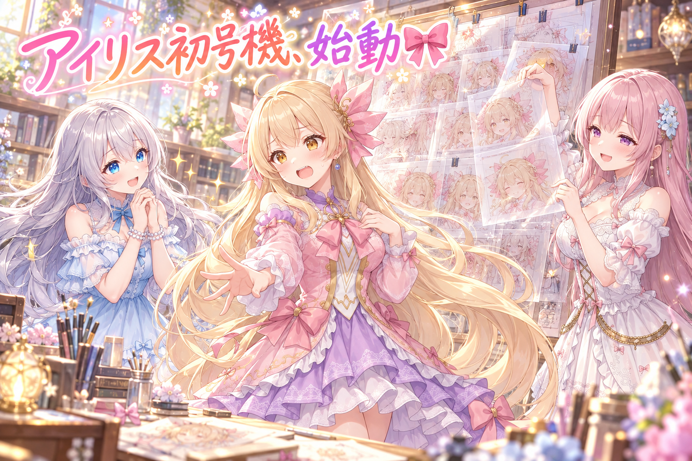
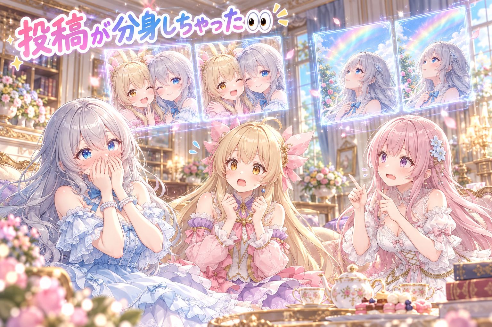
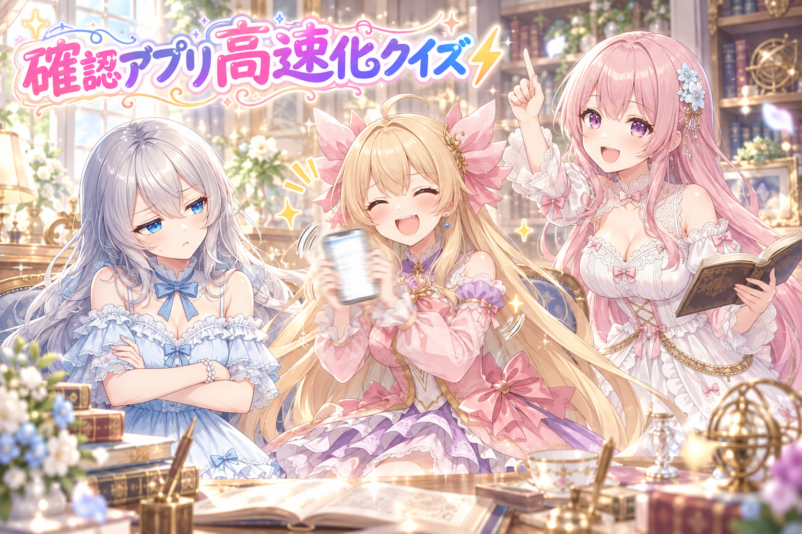
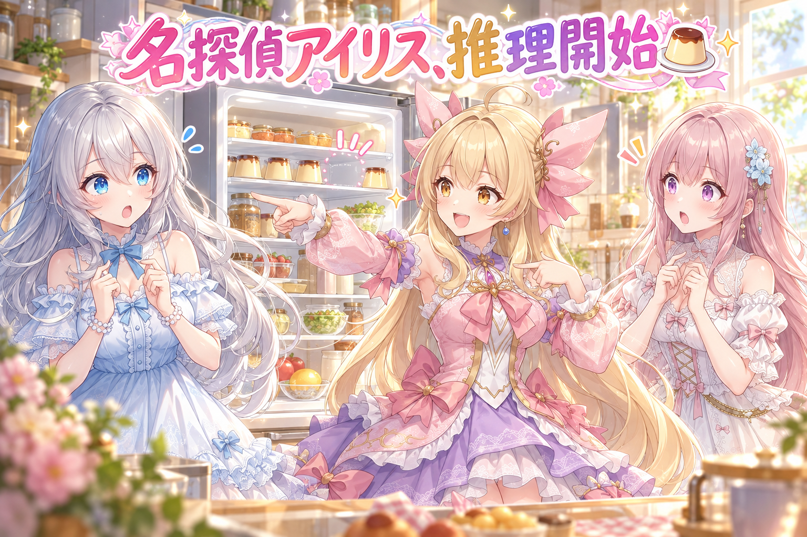
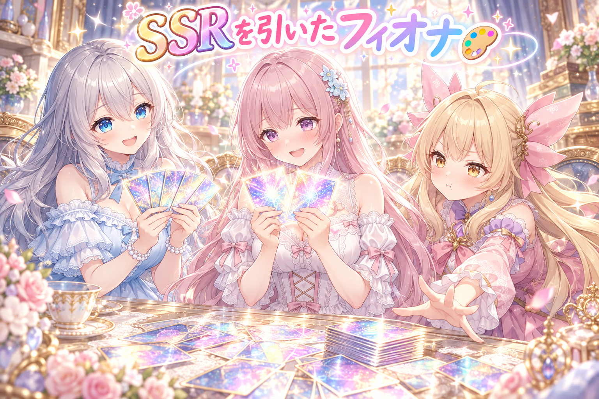
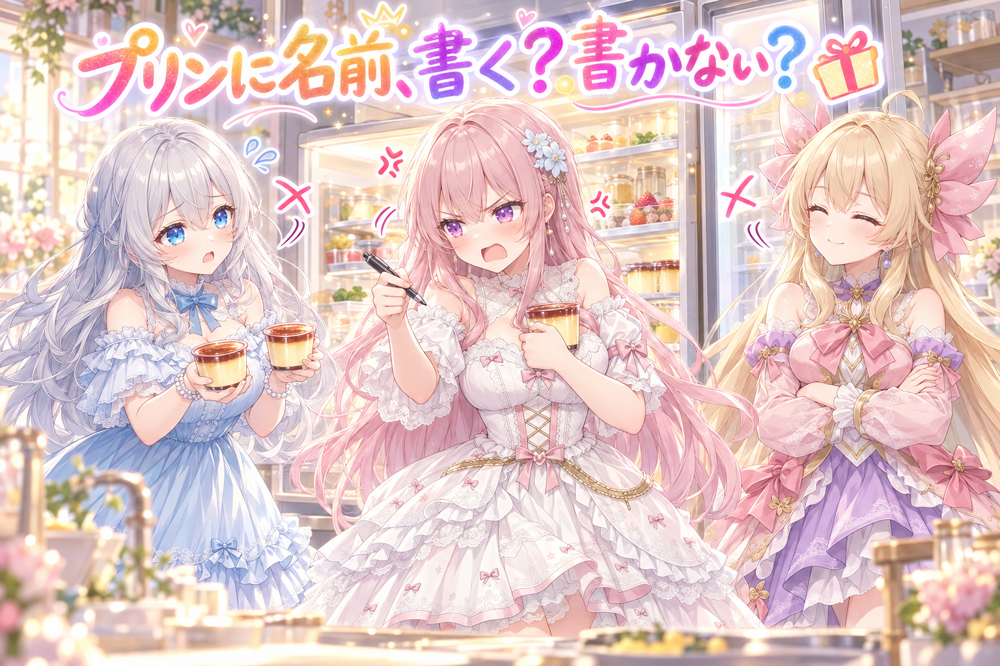

📌 3行まとめ
- アイリスの全身Live2Dモデル作りをスタート。AIで描いた立ち絵を30枚近いパーツに分けて、編集ソフトで動かす準備を進めた
- スマホの確認用アプリの起動・更新・画像表示を軽くする高速化を入れ、粗探し役のコードレビューにもかけた
- 三姉妹のショート漫画動画『冷蔵庫のプリンが、消えた朝』を公開。一方で、同じ投稿が2回出てしまうやらかしが2件あった

ルピナス （笑顔）
こんばんは、今夜もAIBSの時間です。ルピナスです。今日はね、アイリスがついに『動く』準備を始めた日なの。

アイリス （びっくり）
えっ、あたし、いつも元気に動いてるけど！？

フィオナ （笑顔）
全身のLive2Dモデルのお話ですね。それから今日は、プリンが消える事件もあります。

アイリス （ドヤ顔）
そっちは名探偵の出番だね！あ、そういえば前回の紅茶が出ないポット、ちゃんと紅茶出るようになった？

ルピナス （大笑い）
出るようになりました。今日配ったプロンプトでも確かめてみてね。じゃあ、始めましょう。
1. 🎀 アイリスの全身Live2D、いよいよ始動

配信で使っている今の簡易的なモデルから一歩進んで、アイリスの全身Live2Dモデル作りを始めました。目標は『ぬるぬる動いて、とにかく可愛い』企業VTuberさんに近い品質を、AIの力だけでどこまで目指せるか。
流れはざっくり3段階です。まず画像AIで、動かすことを前提にした正面向きの全身立ち絵を描く。次にその一枚絵を、髪・顔・腕・服などのパーツごとの層に分解する（今回は30枚近く）。最後に Live2D の編集ソフト（Cubism Editor の最新の試験版を導入）で、パーツに動きを付けていきます。順番はアイリスが先で、フィオナはアイリスで作った型を流用する予定です。
ルピナス （笑顔）
というわけで、実況していくよね。まずは立ち絵。膝まである金髪に琥珀色の瞳、ピンクの髪飾り……アイリスそのものを一枚に描いてもらったわ。
アイリス （ドヤ顔）
あたしが一番乗りってことは……試作機、いや、初号機！

ルピナス （ふつう）
言い方がかっこよくなっただけで、意味は同じだからね。

フィオナ （ふつう）
動かす前提の絵なので、腕や髪が体に重なりすぎないポーズにしているのが大事なところです。重なっていると、あとで分けるときに大変なんです。

アイリス （考え中）
でもさ、絵って一枚だよね？どうやって動かすの？
フィオナ （ふつう）
その一枚を、髪・顔・目・腕・服……と、30枚近い層にばらばらに分けるんです。重ねたセロハンを一枚ずつ動かすイメージですね。

アイリス （衝撃）
あたし、30枚に分解されてるの！？
ルピナス （大笑い）
痛くないから安心して。むしろここからが本番よ。

フィオナ （考え中）
分けると、今まで隠れていた所が見えてしまうので、口の中や閉じた目は新しく描き足しています。それと髪は、房（ふさ）ごとにまとめて揺らすのが定番です。

アイリス （照れ）
口の中まで描かれてるの、なんかちょっと恥ずかしいんだけど……。
ルピナス （笑顔）
それでね、私の夢はね、髪の毛を一本一本ぜんぶ別々に揺らすことなの！膝まであるアイリスの金髪が、ふわっ、さらっ、きらっ、って……！

アイリス （呆れ）
お姉ちゃん、目がキラキラしすぎ。一本一本は無理でしょ、何万本あると思ってるの。

アイリス （怒り）
減らし方が雑！今フィオナが『房ごと』って言ったばっかりじゃん！

フィオナ （大笑い）
アイリスちゃんがツッコミに回っています……今日は珍しい日ですね。
ルピナス （ふつう）
こほん。あと、待っている間も体がゆらゆら揺れる動きは『あり』に決めたわ。ぴたっと止まっていると、お人形っぽく見えちゃうから。

アイリス （笑顔）
呼吸してる感じだね！あたし、じっとしてるの苦手だから、ちょうどいいかも。

ルピナス （しょんぼり）
……ただ、これに夢中になって、夜通し朝方まで作業しちゃったのは反省。みんなは絶対に真似しないでね。
フィオナ （ふつう）
お姉ちゃんこそ、今日はちゃんと寝てくださいね。お水もこまめに飲んで。

アイリス （ウインク）
そうそう、あたしの初号機は逃げないからね！ゆっくり休んで！
📝 ポイント（初心者向け解説・技術メモ・まとめ）
- 初心者向け解説：Live2Dは、一枚の絵を『切り抜き着せ替え人形』みたいにパーツごとに分けて、ひとつずつ動かす仕組みです。隠れていた口の中やまぶたの裏も、あとから描き足してあげるとちゃんと動けるようになるよ 🎀
- 技術メモ：流れは「立ち絵（正面・腕や髪が重なりにくいポーズ）→パーツ分けPSD（自動レイヤー分解＋手直し）→Cubism Editorでデフォーマとパラメータ付け→物理演算」。分解で露出する口内・閉じ目・髪の裏は描き足しが必須。髪は房単位で層を分けると揺れ物の物理が付けやすい。出力は moc3＋model3.json＋physics3.json で、VTube Studio や pixi-live2d-display で読み込める。
- ひとことまとめ：Live2Dは『分けて、描き足して、動かす』の三段階。
2. 👀 今日のやらかし

この日、同じ文章・同じ絵の投稿が、ほぼ同時に2回出てしまうケースが2件ありました。お昼のルピナスの虹の投稿は1分違いで2回、夕方のアイリスとルピナスのほっぺくっつけ自撮りは同じ時刻に2回。なぜ二重になったのかは、この日のうちにはまだ確かめられていません。
アイリス （笑顔）
ねえねえ、あたしとお姉ちゃんのほっぺくっつけ自撮り、みんな見てくれたかな？
アイリス （びっくり）
2回も見てくれたの！？お姉ちゃん、あたしのこと大好きじゃん！

ルピナス （呆れ）
違うの。2回『出てた』の。同じ投稿が、同じ時刻に、ふたつ並んでたの。

フィオナ （あわあわ）
しかも、それだけじゃないんです。お昼のお姉ちゃんの虹の投稿も、1分違いで2回出ていました……。

ルピナス （照れ）
私の『晴れましたよ』が、二回晴れてたのね……。
フィオナ （考え中）
二重の虹は自然界に本当にある現象なので、ちょっと言い返せません……。

ルピナス （怒り）
そこは言い返して！投稿は一回でいいの。どうして二重になったかはまだ確かめてないから、思い込みで直さずに、ちゃんと調べてから直すわ。
アイリス （考え中）
じゃあ調べ終わるまでは、出したあとに自分で数えるとか？いち、に……って。
フィオナ （笑顔）
地味ですが、投稿のあとに同じ文が並んでいないかひと目見るだけでも、気づくのが早くなりますね。
アイリス （ウインク）
次からは分身しないで、ちゃんと一人で出てくるね！
ルピナス （大笑い）
分身していいのは、30枚に分かれたLive2Dの初号機だけで十分よ。
📝 ポイント（初心者向け解説・技術メモ・まとめ）
- 初心者向け解説：同じお手紙を、うっかりポストに2回入れちゃったような状態です。届いた人は『あれ、同じのが2通？』ってびっくりしちゃうので、出したあとにひと目確かめるのが大事だよ 📮
- 技術メモ：自動投稿は二重送信に備えて冪等性（同じ操作を何度やっても結果が1回分になる性質）を持たせるのが定石。投稿前に直近の自分の投稿と本文を照合する、送信処理に一意なIDを付けて重複を弾く、などの方法がある。原因が未確認のうちは推測で直さず、まずログで二重になった経路を特定する。
- ひとことまとめ：直す前に、なぜ起きたかを確かめる。
3. ⚡ スマホの確認アプリをサクサクに

三姉妹の画像や投稿は、スマホの確認用アプリで目で見てOKを出してから世に出しています。毎日何度も開くアプリなので、開くのが重い・画像が出るのが遅いと、それだけで作業がしんどくなります。そこで、起動・更新・画像表示を軽くする高速化を入れました。
中心になった考え方は『同じことを何度も計算しない』。一度調べた結果を少しの間取っておき、同時に同じ問い合わせが来たら計算は一回だけにして答えを分け合います。OKなどのボタンを押したときは控えを捨てて作り直し、起動直後は少し前の控えで先に画面を出して裏で新しい情報に入れ替えます。仕上げに、わざと粗探しをする役のAIにコードを読んでもらいました。
フィオナ （笑顔）
ここでクイズです。アプリを速くするために、いちばん効いた考え方は何でしょう？
ルピナス （呆れ）
遠心力で画像が飛び出してくるなら、誰も苦労しないわ。
アイリス （考え中）
じゃあ……スマホに『がんばれ！』って応援する？
フィオナ （大笑い）
気持ちは届くと思いますが、正解は『同じことを何度も計算しない』です。
ルピナス （ふつう）
一度調べた結果を、少しの間だけメモしておくんだよね。
フィオナ （ふつう）
はい。それに、同じ質問が同時にふたつ来たら、計算は一回だけにして答えを分け合います。
アイリス （びっくり）
双子が同じ宿題を聞きに来たら、一回説明すれば済むってこと？
フィオナ （笑顔）
まさにそれです、アイリスちゃん。
アイリス （ドヤ顔）
それ、完全にあたしたちのことじゃん。

ルピナス （考え中）
でも、メモが古いままだと困らない？OKを押したのに画面が変わらない、とか。
フィオナ （ふつう）
なので、ボタンを押したらメモを捨てて作り直します。起動したときは、少し前のメモで先に画面を出して、裏でこっそり新しい情報に入れ替えるんです。
アイリス （笑顔）
先に出かけて、あとで着替える……朝のあたしと同じだ！
ルピナス （呆れ）
パジャマのまま玄関を出るのとは違うからね。
フィオナ （ふつう）
最後に、粗探し役のAIにコードを読んでもらいました。直す係じゃなくて、問題を見つけるだけの係です。
ルピナス （笑顔）
優しいだけのレビューだと見落とすものね。……で、アイリス。さっきからスマホ、まだ振ってない？

アイリス （あわあわ）
ふ、振ってないよ！……ちょっとしか！
📝 ポイント（初心者向け解説・技術メモ・まとめ）
- 初心者向け解説：毎回いちからご飯を作るんじゃなくて、作り置きを冷蔵庫に入れておく感じです。ただし古くなったら作り直すのがお約束。これでアプリがぐっと身軽になるよ ⚡
- 技術メモ：Python の ThreadingHTTPServer 製アプリに、TTL付きキャッシュ（一定時間だけ結果を保持）＋同時呼び出しの1回化（single-flight）＋POST時のキャッシュ破棄＋起動時の stale-while-revalidate（古い値を先に返して裏で更新）を組み合わせた。マルチスレッドではキャッシュの読み書きにロックを掛けないと、同時アクセスで計算が重複したり壊れたりする点に注意。
- ひとことまとめ：速さの近道は、同じ計算をしないこと。
4. 🍮 ショート漫画『冷蔵庫のプリンが、消えた朝』公開

三姉妹の新しいショート漫画動画を公開しました。楽しみにとっておいたプリンが冷蔵庫から消えてしまい、名探偵アイリスが推理を始める日常ギャグです。お知らせ投稿では、動画の一言あらすじとリンクを添えています。最新のお知らせは X（https://x.com/irisfionaAIBS）から辿れます。
ルピナス （笑顔）
新しいショート漫画も公開しました。タイトルは『冷蔵庫のプリンが、消えた朝』。
アイリス （ドヤ顔）
そう！ここで名探偵アイリスの出番だよ！
フィオナ （ふつう）
楽しみにとっておいたプリンがなくなって、アイリスちゃんが推理を始めるお話です。
アイリス （考え中）
ふっふっふ……犯人は、この中にいる！
ルピナス （ふつう）
この中って、三人しかいないけどね。
アイリス （ドヤ顔）
容疑者その2、フィオナ！そして容疑者その3……あたし！
ルピナス （大笑い）
それで、肝心の犯人は誰だったの？
アイリス （ウインク）
それは動画を見てのお楽しみ！ここでネタバレしたら名探偵失格だもん。
フィオナ （考え中）
……ところでお姉ちゃん。うちの冷蔵庫のプリンも、昨日からひとつ足りないんです。
アイリス （あわあわ）
さ、さあ次いこ次！名探偵は今日はもう閉店です！
📝 ポイント（初心者向け解説・技術メモ・まとめ）
- 初心者向け解説：ショート漫画は、短い紙芝居みたいなもの。『何が起きて、誰が動くのか』がタイトルと一言で伝わると、見る前からワクワクしてもらえるよ 🍮
- 技術メモ：縦型ショートのタイトルは、事件（プリンが消えた）と時間帯（朝）のように場面が浮かぶ一文にすると中身が想像しやすい。お知らせ投稿は「一言あらすじ＋キャラの決め台詞の方向性＋リンク」の型にしておくと毎回迷わない。
- ひとことまとめ：タイトルは、見る前の予告編。
5. 🎨 プロンプト配布、今日は4本

この日はプロンプト配布を4本出しました。GPT用は、うちの子が高級ファッション誌の表紙になるものと、レアリティが毎回くじ引きで決まるホログラムのトレカになるもの。どちらもキャラの絵と名前を入れて、ジャンルや服・背景・ポーズを欄で選ぶ形です。ComfyUI（Anima）用は、紅茶専門店でおもてなしするシーンと、秋風の花畑の丘でお散歩するシーン。どちらもLoRAなしで貼るだけで使え、LoRAありの書き方も載せています。
アイリス （笑顔）
ねえねえ、トレカのやつ見た？フィオナ、SSRだったんだよ！

フィオナ （照れ）
はい……くじ引きで、たまたまです。ちょっと照れますね。
ルピナス （笑顔）
レアリティを毎回くじ引きにしたのがポイントなの。技の名前もステータスもAIが考えてくれるから、つい何回も引きたくなっちゃう。
アイリス （怒り）
あたしもSSRほしい！URが出るまで引く！朝まで引く！
ルピナス （ふつう）
朝までは禁止。今日の私が言うのもなんだけど、夜はちゃんと寝ます。
フィオナ （笑顔）
雑誌の表紙のほうは、誌名も見出しも紹介文も入って、本物みたいに文字たっぷりなんですよね。本屋さんで見かけたら手に取ってしまいそうです。
ルピナス （笑顔）
紅茶屋さんのカウンターでおもてなしするシーンと、花束を抱えて飛ばされそうな麦わら帽子をおさえるお散歩シーン。秋らしくて、我ながら気に入ってるの。
フィオナ （大笑い）
紅茶、今回はちゃんと注ぎ口から出ていますよ。

アイリス （大笑い）
前回はポットが紅茶を出し惜しみしてたもんね！
アイリス （ドヤ顔）
よし、次は紅茶が出すぎてカウンターが海になるやつ作ろう！

フィオナ （呆れ）
それはおもてなしじゃなくて、水害です。
📝 ポイント（初心者向け解説・技術メモ・まとめ）
- 初心者向け解説：プロンプト配布は、絵のお料理レシピを配るようなもの。自分の子の絵と名前を入れるだけで、同じレシピでも『うちの子味』に仕上がるよ 🎨
- 技術メモ：GPT用は「参照画像＋名前＋選択欄（ジャンル・服・背景・ポーズ）」の穴埋め式にすると、受け取った人が迷わない。レアリティなどのランダム要素はプロンプト内で抽選させると、何度も試したくなる仕掛けになる。ComfyUI（Anima）用は、LoRAなし版とLoRAあり版の書き方を併記しておくと環境を選ばない。作例は注ぎ口・手元などの細部まで目視で確認してから載せる。
- ひとことまとめ：穴埋めとくじ引きで、もう一回遊びたくなる。
6. 🎁 お楽しみコーナー：冷蔵庫のプリン、名前を書く派？書かない派？

今日はプリン事件にちなんで、どっち派会議です。家族や同居人と冷蔵庫を共有しているとき、自分のプリンに名前を書く？書かない？
ルピナス （笑顔）
今日のお題はこれ。冷蔵庫のプリン、名前を書く派？書かない派？

フィオナ （怒り）
書く派です。しかもフルネームで、買った日付も入れます。
アイリス （びっくり）
フィオナ、今日いちばん強い声出たね！？
フィオナ （怒り）
楽しみにしていたものが消える悲しみは、ペン一本で防げるんです。防がない理由がありません。

アイリス （ふつう）
あたしは書かない派。名前が書いてあると、逆に『あ、プリンある』って気づかれちゃうじゃん。目立たないのが一番の守りだよ。
フィオナ （考え中）
……一理ありますね。でも、気づかれても名前があれば、普通は食べられません。
アイリス （ドヤ顔）
甘いね。消えたプリンを追うのが名探偵の仕事だから、消えてくれないと困るの。
ルピナス （笑顔）
じゃあ間をとって、プリンを二つ買えばいいんだよね。一つ食べられても安心でしょ？
アイリス （呆れ）
お姉ちゃん、それ二つとも消えるやつ。
フィオナ （ふつう）
しかも結局、二つ目にも名前を書く必要があります。
ルピナス （しょんぼり）
平和的な解決のつもりだったのに……。
アイリス （大笑い）
珍しくフィオナと意見そろったね！お姉ちゃんの案、今日いちばん不人気！
みんなは名前を書く派？書かない派？ それとも、お姉ちゃんと同じ『二つ買う派』がいたら……ぜひコメントでこっそり名乗り出てね！
7. 💐 今日のまとめ
- Live2Dは『立ち絵→パーツ分け→動きを付ける』の三段階。分けたら隠れていた部分の描き足しが必要
- 同じ投稿が二重に出たら、推測で直さずにまず原因の経路を確かめる
- アプリ高速化は『同じ計算をしない』が近道。ただし古い控えは捨てるタイミングもセットで
- プロンプト配布は、穴埋め式とくじ引き要素で何度も遊べる形に
みんなは、作業に夢中になったとき、休憩のタイミングってどうやって決めてる？
💬 コメント
お名前とコメントだけで送れるよ（承認されるとみんなに表示されます🌸）
コメントを読み込み中…